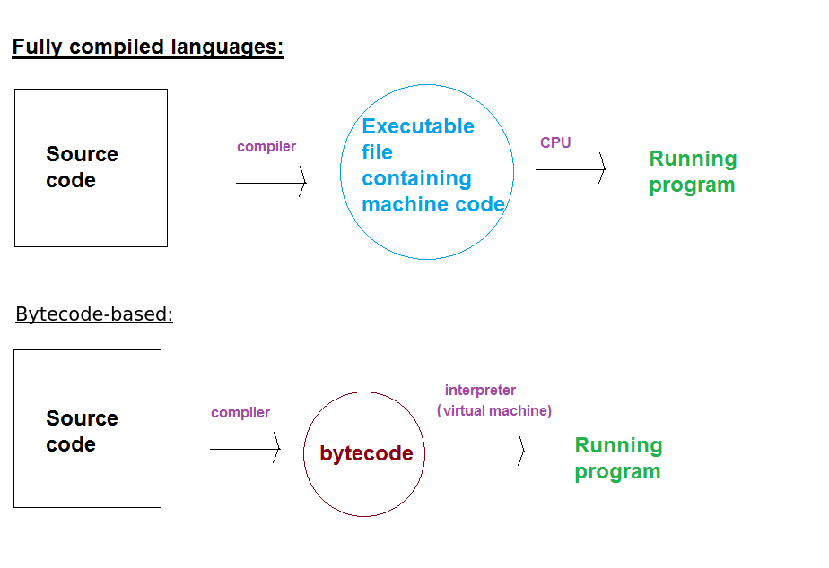
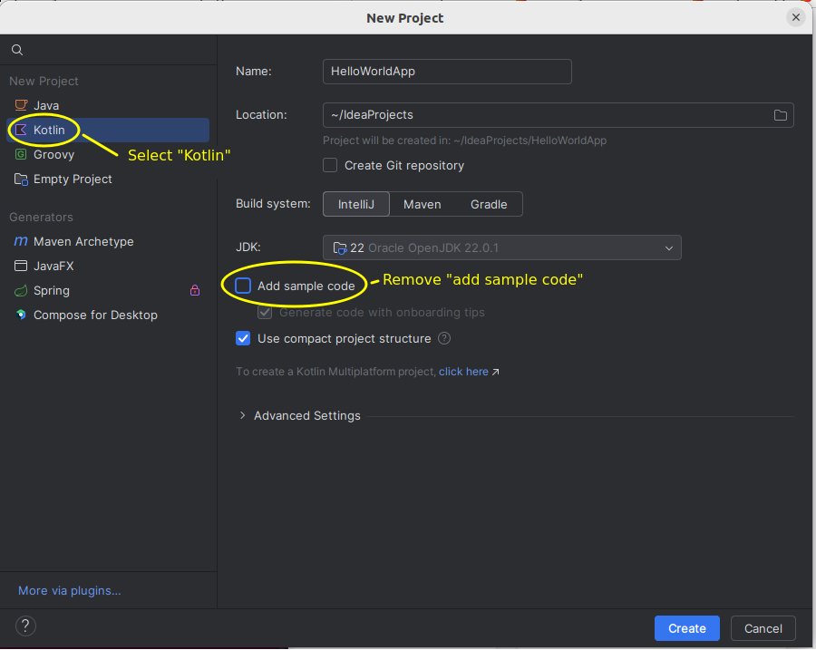
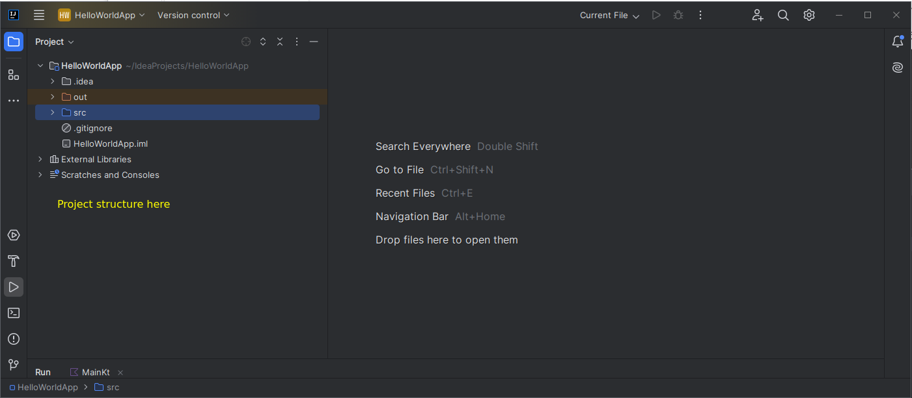
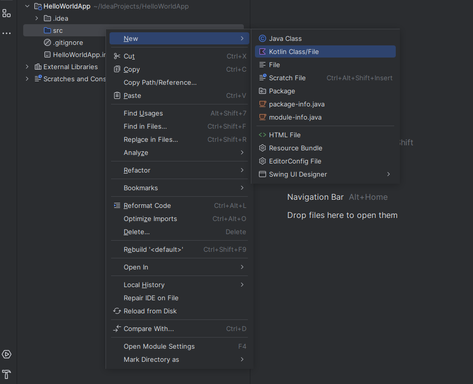
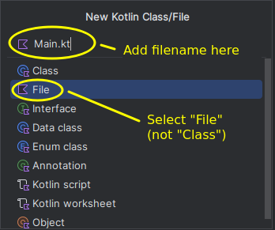
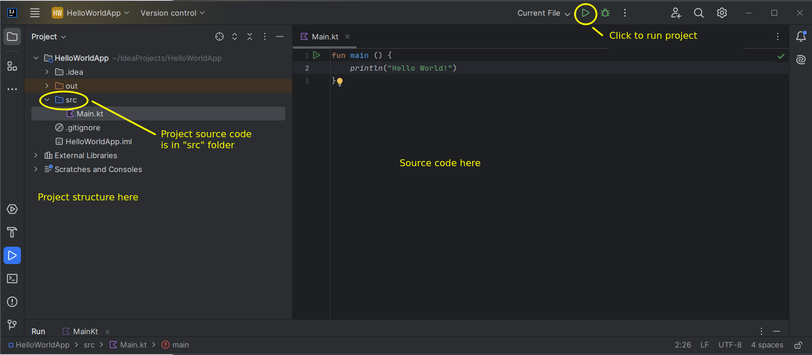
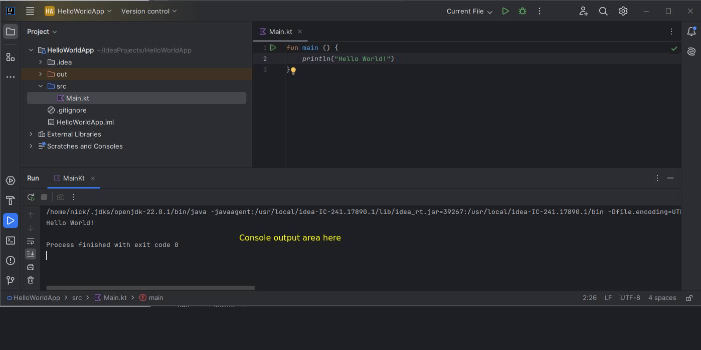
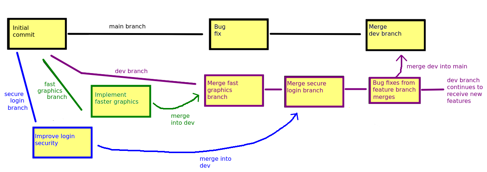

Introduction
So far on your course you have been introduced to the fundamentals of programming using Python. You have learnt about variables, loops, conditional statements, arrays and functions as well as object-oriented programming. As you saw last year, object-oriented (OO) programming involves writing code to represent real world objects such as a student, a car, players and enemies in games, or graphical user interface elements such as windows and buttons. As you will hopefully see in this module, once you have learnt it, OO programming leads to more readable, more maintainable code.
Object-oriented programming can be used in many languages, such as Python, JavaScript, Java, or C++. An increasingly popular OO language, however, is Kotlin, and we will use Kotlin in this module. This is for a couple of reasons: Kotlin allows you to use contemporary programming styles easily, and Kotlin is the main language for Android development (which many of you will do in Semester 2).
Furthermore, with Kotlin, you can develop applications using a mix of Kotlin and Java, a very commonly-used object-oriented language. Both Kotlin and Java allow you to develop cross-platform applications: you can write a Kotlin/Java program on Windows and the same program will work on other operating systems such as Linux or Mac OS X.
When developing applications, we can use compiled or interpreted approaches, or a mix of the two.
- A compiled language is a language which is converted from source code into machine code for the machine's CPU, in an executable format understandable by the machine's operating system. This conversion is done by a piece of software known as a compiler. For example, on a Windows/Intel system, Intel machine code instructions would be stored in a .EXE file. On a Linux/Intel system, Intel machine code instructions would be stored in a Linux executable file, which has a different format to an .EXE but still contains Intel instructions. On a smartphone with an ARM processor, ARM machine code instructions would be generated. C++ is an example of a compiled language. You write C++ code and then compile it into machine code for the target CPU and operating system. Machine code is a binary format: a series of bytes which mean something to a CPU but cannot be read in a text editor. Kotlin can also be used as a pure compiled language via Kotlin/Native.
- An interpreted language is a language in which each line of code is read by a piece of software known as an interpreter at run time, i.e. when you run the program. Interpreted languages are slower than compiled languages. With a compiled language, you run the executable which contains machine code, and machine code is directly understood by the CPU. With interpreted languages, the process of interpreting each line of code at run time is a slow one in comparison to the CPU executing instructions that it understands directly. On the other hand, interpreted languages will run on any machine upon which an interpreter is installed, so they are more portable. They are easier to debug, as you can simply edit the code: with compiled languages, you need to compile again, and if the machine code generated by the compiler contains certain types of errors (e.g. trying to add an element to an array outside its bounds) there is the risk that the computer will crash.
- A third approach, commonly used with Kotlin, uses bytecode and a virtual machine. This does not exactly fit into either category, but instead adopts a hybrid approach. You
compile a program, but it is not compiled into native machine code. Instead, it is compiled into a format known as bytecode which can be run on a virtual machine: a piece of software which interprets the bytecode. Thus it is a combined compiled/interpreted approach: the original source code is compiled into bytecode, and the bytecode is then interpreted by the virtual machine. Thus it combines the advantages of the two approaches:
- The bytecode will run on any device upon which the virtual machine is installed, thus it is cross-platform;
- Because it is a compact, machine-friendly format, bytecode can be read by virtual machines faster than interpreters in pure interpreted languages can read text files of source code.
This is also the reason why you can mix Java and Kotlin in one application. You can write part of the application in Java and part in Kotlin, and because both compile to Java bytecode, the application will work as a complete whole.
The diagram below compares a standard compiled language and a language making use of bytecode.

Key features of Kotlin
Kotlin, developed by JetBrains (the developers of PyCharm and IntelliJ IDEA) is based on the Java programming language but also contains features of Python and JavaScript. With Kotlin you can develop object-oriented applications, and we will be focusing mostly on object-oriented development in this module. However it also allows you to use other development styles, such as the increasingly-popular functional programming.
Some features of Kotlin include:
- Null safety which prevents unintended use of
nullvariables (equivalent toNonein Python) - Type inference: type of variables can be inferred by what they are initialised to, so you don't need to explicitly declare the data type
- Lambda functions: anonymous functions which can be passed as arguments to other functions (similar to arrow functions in JavaScript)
- Data classes: concisely create classes which represent data and do not need methods
- Extension functions: add a single function (method) to an existing class without needing to subclass it
- Coroutines: a lightweight approach to multi-tasking
Basic Kotlin coding
Hello World in Kotlin
- Here is Hello World in Kotlin:
fun main () { println("Hello World!") } - Note that in Kotlin, we define a main function (
funis the Kotlin keyword to indicate a function). The main function is calledmain()and is the entry point of the application. If you do not provide amain()function, the Kotlin runtime environment will be unable to work out where your program starts. You may be familiar with this concept if you have used languages such as C or C++ in the past. println()prints to the console, just likeprint()in Python
Data types in Kotlin
A difference between Kotlin and Python is that Kotlin is a strongly typed language. What does this mean? Whereas in Python, a variable can contain different data types, in Kotlin a variable can contain only one data type throughout its lifetime. By data type, we mean integer, floating-point, string and so on. Kotlin has the following data types (see the documentation).
Boolean: represents a boolean, i.e. true or false, value. Expressions return boolean values. Note that in Java, unlike in Python,trueandfalseare lower case.Byte: represents a single byte of data. Can hold the values 0 to 255.Char: represents individual characters such as 'a', '!' or '$'. You will have met the ASCII character set where the values between 0 and 127 represent single characters (letters, numbers and punctuation from American English). An extended version, covering values 0 to 255, accounts for Western European characters (French, German etc as well as currency symbols such as the pound and the euro). However, theChardata type in Kotlin is designed to hold characters from international character sets such as Greek, Cyrillic (used in many Eastern European languages), Chinese or Arabic and thereforeCharoccupies two bytes in Kotlin. The two-byte system for representing characters is called Unicode.Short: represents smaller whole numbers (16 bits or two bytes) in situations where memory is limited.Int: represents an integer (a whole number). Occupies four bytes (32 bits). Can hold positive and negative values, and therefore can store values from -231 to +231-1 (31 bits for the number, 1 bit for the sign).Long: represents larger whole numbers. Occupies eight bytes (64 bits). Again can hold positive and negative values, and therefore can store values from -263 to +263-1.
Occupies two bytes (16 bits). Again can hold positive
and negative values, and therefore can store values from -215 to +215-1
(-65536 to +65535)
Float: represents floating-point numbers. Occupies four bytes (16 bits). Recommended where memory is short but due to the relatively low precision, not recommended for applications such as scientific and financial data.Double: represents double-precision floating-point numbers. Occupies eight bytes (64 bits). Recommended for operations where high precision is vital, such as scientific and financial data.StringandArrays (of various types)
An important feature of Kotlin is that all data types are objects, even integers. We will look at the consequences of this later.
Variables example
- This example shows some aspects of how variables work in Kotlin:
fun main () { // Declare a as an Int. "val" means it is immutable (cannot be changed) val a: Int = 3 // Type inference: "b" is an Int because it is initialised to an Int val b = 4 // "c" is a "var", which means it can be changed var c = 5 // increase "c" by one c++ // this would give a compiler error as "b" is immutable // b++ // this would also give a compiler error as "c" is implicitly an Int //c = "A String" // Some other data types val d = 12345678L // Long, because it ends with L val pi = 3.141592654 // Double, the default for floating-point numbers val f = 1.23f // Float val str = "Hello" // String // Print them out. Note how we can embed variables in a string // by preceding them with '$' println("a is $a, b is $b, c is $c, d is $d, f is $f, pi is $pi, str is $str") } - Note how we use
valfor immutable (unchanging) variables, andvarfor mutable variables (those which can change) - Note how the type of a variable can be inferred by what value we assign it to, in all variables above apart from "a", we do not declare the type
- Nonetheless the variables are strongly typed. Once you have declared a variable, you can only store data of that type in the variable, unlike Python. So, we cannot place a String in the variable
cin the above example. - See here for details on Kotlin data types
Loops in Kotlin
- The program below shows some examples of basic loops:
fun main (args: Array<String>) { // Count from 1 to 10 for (i in 1..10) { println(i) } // Count from 1 to 9 ("until" discounts 10 itself) for(j in 1 until 10) { println(j) } // count from 1 to 9 in steps of 2 for(k in 1..9 step 2) { println(k) } } - Note the syntax
1..10. This is called a range expression. It returns aRangeobject representing the range of numbers 1 to 10. - Note also the difference between the first two examples;
until is a function which
returns a Range from the initial number up to, but
not including, the final number
- So the second loop will only count from 1 to 9
- We also have the standard
whileloop too, which is very like the equivalent in JavaScript - See here for full documentation on loops
Conditional statements in Kotlin
- The program below shows some examples of conditional statements in
Kotlin:
fun main (args: Array<String>) { println("Enter your name:") val n = readln() if (n == "Linus Torvalds") { println("You invented Linux") } else { println("You didn't invent Linux") } println("Enter your grade:") val grade = readln() when(grade) { "A" -> println("First") "B" -> println("2.1") "C" -> println("2.2") "D" -> println("Third") "F" -> { println("Fail") println("Please resit in the summer.") } else -> println("Invalid grade $grade.") } } - Note how if/else is similar to JavaScript
- The
whenstatement is specific to Kotlin though is similar toswitchin other languages. - Note the use of
elseinsidewhento handle unmatched conditions (e.g. here, if the grade is not A, B, C, D or F)
Conditional expressions
- An important difference in Kotlin compared to many other languages is that conditionals can be used as expressions, i.e. they can return a value which can be assigned to a variable
- eg.
fun main (args: Array<String>) { println("Enter your name:") val n = readln() // "msg" contains the result of the if statement val msg = if (n=="Linus Torvalds") "You invented Linux" else "You didn't invent Linux" println(msg) println("Enter your grade:") val grade = readln() // "degree" contains the result of the when statement val degree = when(grade) { "A" -> "First" // Return "First" when grade is "A" "B" -> "2.1" // Return "2.1" when grade is "B" "C" -> "2.2" "D" -> "Third" "F" -> "Fail" else -> "Invalid grade $grade." } println("Degree awarded: $degree.") } - Note in this example how we store the result of the
ifstatement in the variablemsg- ...so that
msgwil contain either You invented Linux or You didn't invent Linux, depending on the name typed in
- ...so that
- Also notice how the
whenstatement similarly returns a value, i.e. "First" when the grade is "A", "2.1" when the grade is "B", etc.
Basic arrays, including for-in and if-in
- Arrays are available in Kotlin, like most other languages
- The
inkeyword in Kotlin allows us to do loops with arrays and easily work out if a value is in an array: this is the same idea as in Python. -
fun main (args: Array<String>) { val langs = arrayOf("Python", "Java", "JavaScript", "PHP", "Kotlin") println("Languages you are learning at university:") for(curLang in langs) { println(curLang) } println("Please enter a programming language:") val lang = readln() val msg = if(lang in langs) "learning" else "not learning" println("You are $msg $lang at university.") } - Note the use of the if statement as an expression again
(
if(lang in langs)...) - Next time we will cover some additional features of arrays, and lists
Nullability
- In Kotlin, the value
nullis used to indicate "no value", rather likeNonein Python - A common error in programming is to unintentionally use a null variable, because you expect it to contain something
- One of the really useful features of Kotlin is null safety
- With Kotlin, you can declare a variable to either be nullable or non-nullable
- Non-nullable variables will produce a compiler error if you attempt to store 'null' in them
Non-nullable variables
- By default, given data types (String, etc.) are non-nullable `
- So this code will not compile, beacuse we declare s as a
non-nullable String and attempt to assign null to it
fun main (args: Array<String>) { var s: String = null println(s.length); }
Nullable variables
- What about cases where we want the variable to be nullable?
- For example, a collection of data which doesn't exist until we open a file and read it in from the file
- In this case, we explicitly declare the variable as nullable by adding a question-mark ? to the data type
- So, will this code successfully compile?
fun main (args: Array<String>) { var s: String? = null println(s.length); }
The safe-access operator
- The answer is no, because even though we declared s as a nullable string, we then try to access the length of a String object which is null
- In Java this type of operation would throw a NullPointerException
- Kotlin's null-safety forces you to deal with this using the safe-access operator, ?.
- Here is the previous example, rewritten to use the safe-access operator:
fun main (args: Array<String>) { var s: String? = null println(s?.length); } - Here, due to the safe-access operator, we will only access the length if "s" is not null
Functions in Kotlin
- The following example shows the use of functions in Kotlin,
including parameters and return types:
fun printString(s: String, nTimes: Int) for(i in 1..nTimes) { print(s) } print("\n") } fun cube(number: Double) : Double { return number * number * number } fun main (args: Array<String>) { printString("*", 3) printString("#", 4) printString("!", 5) println("The cube of 3 is: ${cube(3.0)}") } - Note the syntax for parameters, in which we specify the data type of each parameter:
fun printString(s: String, nTimes: Int)
and note how we specify the return type of the function: the type of data which is returned.fun cube(number: Double) : Double
- This illustrates the strongly-typed nature of Kotlin. We must pass in a string and an integer to the function; if we pass anything else the compiler will give an error. Similarly, we must return a double from the function.
- Note also how we can put function calls in quotes using $, and {} to
contain the expression
- println("The cube of 3 is: ${cube(3.0)}")
Classes and Objects in Kotlin
As this is an object-oriented programming module, we will now look at how to create classes and objects in Kotlin. Remember from last year that:
- a class is a general blueprint, or specification, for what data an entity contains and how it operates (e.g.
Cat); - an object is a specific example of that class (e.g. a specific cat).
- Properties, also known as attributes, which describe objects of that class. For example, a cat class might have name, age and weight properties;
- Methods, which describe what objects of that class can do. These are functions within the class. For example, a cat class might have
walk(),eat()andmeow()methods.
A Cat class
Here is an example of a Kotlin class representing a Cat:
class Cat (nameIn: String, ageIn: Int, weightIn: Int) {
// Properties (attributes)
val name: String
var age: Int
var weight: Int
// Init block, for performing tasks on creation of the object
init {
name = nameIn
age = ageIn
weight = weightIn
}
fun walk() {
weight--
}
override fun toString() : String {
return "Name: $name Age: $age Weight: $weight"
}
}
We could use this in a main() function as follows:
fun main (args: Array<String>) {
val binnie = Cat("Binnie", 10, 10)
val clyde = Cat("Clyde", 5, 5)
binnie.walk()
clyde.walk()
println(binnie)
println(clyde)
}
- Note how we begin the class declaration:
fun Cat(nameIn: String, ageIn: String, weightIn: String)
This is known as the primary constructor. A constructor is used to initialise objects of the current class. It is the equivalent of the initialisation method__init__()in Python. The constructor takes parameters of the name (nameIn), age (ageIn) and weight (weightIn): these are passed into objects from outside the class. - Note how we place the constructor parameters (
nameIn,ageInandweightIn) immediately after the class name - this is different to Python in which we create the__init__()function inside the class body - Note how we need to declare the class properties (
name,ageandweight) inside the class. We did not need to do this with Python. - Note also the init block. This contains code we want to run when the object is first created. Here, we use the init block to set the properties equal to the constructor parameters
- The
walk()function is a class method, working the same way as methods in Python. - The
toString()method returns a string representation of our object, containing the current Cat's name, age and weight. This is useful if we need to display the object. For example, when we print objects, such as our two Cats:println(binnie) println(clyde)
thetoString()method is used to figure out how to display the object.
Note that we precede thetoString()method with the keywordoverride. This explicitly states that we are overriding a method from the superclass, in other words replacing a more general version of the method in the superclass with a more specific version in a subclass. You might be thinking, what is the superclass? No inheritance is declared here. In fact, all Kotlin classes implicitly inherit from theObjectclass, which is the superclass of all others. - Note also that we specify the return type of
toString():override fun toString() : String
Making our class more concise - automatically setting constructor parameters equal to class properties
- This version of the previous example is considerably more concise:
class Cat (val name: String, var age: Int, var weight: Int) { fun walk() { weight-- } fun toString() : String { return "Name: $name Age: $age Weight: $weight" } } - Note how we specify either val or var before each constructor parameter. This automatically makes each parameter an property of the class
- vals will be immutable, vars will be mutable
- Thus, unlike the previous version, we do not have to declare the properties inside the class, or use an init block
Data classes - concisely representing complex data structures
- In many cases, we need to create classes which represent a complex data structure, but do not need methods
- A good example would be a Point class, to represent a 2D point (with x and y coordinates)
- In Java, you could do this (note how x and y are public, to avoid
the need for getters and setters; an implementation which wanted to
make x and y immutable would need to make them private and add getter methods):
public class Point { public int x, y; public Point (int x, int y) { this.x = x; this.y = y; } } - However, having to create a constructor to initialise the properties to the constructor parameters is a pain
- In Kotlin, in an extension of the previous example,
you can create a Point class with just
one line of code:
data class Point(val x:Int, val y: Int)
- That is it! This will create a Point class, with a two argument constructor (x and y), and two immutable (because of val) properties, also x and y
- This could be used in a main() function as follows:
data class Point(val x:Int, val y: Int) fun main (args: Array<String>) { val p = Point(0, 5) val p2 = Point(5, 2) println("${p.x} ${p.y}") println("${p2.x} ${p2.y}") } - Much more concise code!
Exercises
1. Hello World.
We are going to be using IntelliJ IDEA. Create a new project in IDEA by selecting New Project. Ensure that you un-select "Add sample code"; this creates auto-generated code but we will be starting from scratch.

The project will be initialised and you will end up with an empty project, as follows:

You then need to add a new file to the project. Do this by right clicking on src and then selecting New Kotlin Class/File, as shown below:

Then select File (not Class) and choose a filename: Main.kt is standard.

You will then end up with an editing area for your source code on the right of the screen, alongside the project structure. Add "hello world" there:

Then, compile and run the Kotlin program by clicking on the green "Run" icon as shown above. The output will appear in the "Run" console output window at the bottom of the screen.

2. Loops and ifs – basic
- Create a new program, ex2.kt. The program should ask the user to input their name and then should print it 10 times.
- Modify the program so that it also asks how many times they want to display their name.
3. Using an array
-
Create a new program which stores an array of your
favourite music artists.
The program should prompt the user to ask the user to input an artist
name. Use a loop to keep prompting the user until they guess one of the correct artists. Hint: you can use
whilewithinto achieve this.
4. when
Write a program which uses a "when" statement to print the grade (A, B, C, D, E, or F) equivalent to a given percentage. Make the 'when' act as an expression, i.e. you should get it to return a value and then print that value. Grades are as follows:
A - 70-100 B - 60-69 C - 50-59 D - 40-49 E - 30-39 F – 0-29The program should also display "Error - invalid percentage" if the percentage is below 0 or greater than 100. Hint: you can use the "in" keyword with a range (e.g. 1..10) as a condition inside "when".
5. Classes and objects, including using Git branching
This exercise will also allow you to get some initial experience of Git branching.
Git repositories can contain multiple branches, all with the project code in a different state. Why is this important? The main branch of a repository (usually called main or master) represents stable, well-tested code which is production-ready: ready for people to use. Commits to the main branch would normally just be bug-fixes. However, frequently developers wish to add new and experimental features to a project which require extensive testing, and which might break the main branch and make the project unstable and unusable until such testing has been completed. For this reason, developers frequently create additional branches to add these new, experimental features. Often a separate branch for each feature (called a feature branch) is created. Each feature is tested in isolation. Once this has been done, a common strategy is then to merge each feature branch into a development branch (frequently called dev) which will contain all new and experimental features. This can be further tested before similarly merging the code to the main branch.
This typical branching workflow is shown below:

Another use of branches, and one which you will make use of in the Group Project, is to allow multiple developers in a team to work independently on a project. Each team member can create their own branch and work on their assigned features independently, without breaking the main branch. Again, individual team member branches can be merged into a dev branch and tested, and when all is working, the dev branch can be merged into the main branch.
A more detailed article on Git branching and merging is available on the Git website. Git merging is a bit more complex than basic branching (due to the possibility of conflicts), so will be considered later in the module.
Setting up a dev branch of the Cat project
- Login to GitHub and make a fork of this repository containing the cat app above:
https://github.com/nwcourses/CatApp
- Clone your fork from Git Bash:
git clone https://github.com/yourusername/CatApp.git
- Create a separate branch called
dev. This is adevbranch which will contain new features.git checkout -b dev
- Open the project in IntelliJ IDEA.
Working on the Cat app, committing changes, and pushing to GitHub
- Add an additional method to
Catcalledeat(). Theeat()method should add one to the weight of the cat. - Make a commit from Git Bash (we will be using Git Bash to commit and push as it's simpler than via IDEA)Extend the code in the
main()to create two Cats with these attributes:Name: Flathead Age:7 Weight:10 Name: Cupra Age:2 Weight:7
Make Flathead eat twice, and display Flathead's details. Make Cupra walk four times, and display Cupra's details. - Again commit your changes.
- Finally push your
devbranch to GitHub. This will setup a remotedevbranch on GitHub which will be separate from themainbranch.
6. Another object-oriented app
- Create a completely new project called
StudentAppand add a class calledStudentto represent a student, as well as amain(). Give it the following attributes:id, representing the student's ID (String)name, representing the student's name (String)course, representing the student's course. (String)mark, the student's mark (Double).
- A constructor, which initialises the four attributes.
toString()should return the details of the student (name, course and mark).
- Add code to your
main()to create aStudentobject each time the loop runs, using the details the user entered from the keyboard. Then, still within the loop, display each student.